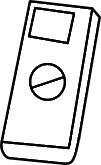
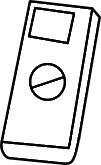
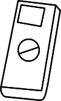

1. Measure the phase shift between the normal and the extraordinary light beam for different
voltages applied to the PLZT-element for different electric field strengths. The half-wave
voltage V (λ/2) is to be determined.
2. By plotting the square of the applied voltage versus the phase shift between ordinary and
extraordinary beams, it is to be shown that the relation between the two quantities is
approximately linear. From the slope of the straight line, the Kerr constant is to be
calculated.
Kerr cell, PLZT-element,
High voltage supply unit (0-1 kV), He-Ne Laser (1.0 mW), 220V AC Polarizing
filter,
Digital multi meter.

μA
Note:- PLZT element which is set to 45° with respect to incident light.
PLZT element which is set to 45° with respect to incident light.
Note:-Set the polariser and analyser to 0°and turn on the laser.
Note:-Set the voltage value to 0V
Note:-Set the analyser to 90° clockwise
Note:-Add observations to table by varying the voltage.
Added Successfully!
CALCULATIONS:
Instructions
Click the start button.
The screen will display the note, click on ok to continue.
The PLZT element is set to 45 degree in its holder with respect to incident light.
The screen will display the next note click on ok.
Set the polariser and analyzer at 0 degree and turn on the laser.
The screen will display the note, click on ok to continue.
Display the value of the voltage to 0V.
Turn the analyser to 90 degree,clockwise.
Adjust the voltage to 300V and Increase the voltage in steps of 25V,from 300V until 1000V and tabulate the measurements as shown on table1.
Display the graph of vs V(volt).
Display the graph of () of vs degree.Display the slope and Kerr Constant.


 
